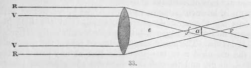
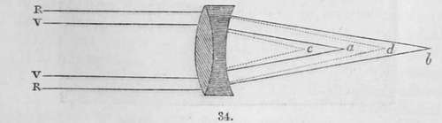
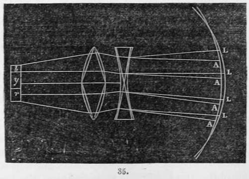

On Lenses For The Photographic Camera. Part 2
Description
This section is from the book "A Manual Of Photography", by Robert Hunt. Also available from Amazon: A Manual of Photography.
On Lenses For The Photographic Camera. Part 2
If we take such a lens as we have been describing, and stop its centre with a blackened disc, leaving only a small portion of the edge for the light to pass through, and throw its image on a screen, we shall find it will be bordered with fringes of colour. At one distance red will prevail, at another violet. This is the result of chromatic aberration, and arises from the unequal refrangibility of the dissimilar rays. The red ray is less bent than the violet; consequently, supposing the rays r r to fall on the edge of a lens, they will converge to a point at F, whereas if the rays V v fall along the same circular line, they will, being more refracted, meet at f. Now if we place a disc at e, just the size of the cone of light, it will be edged with violet, but if we move it to a, the coloured border will be red.
The indices of refraction for the several rays have been most carefully determined by Fraunhofer, and for a standard medium, a flint glass prism, they are respectively:
Red..........1.627749 dark line B
Orange......1.629681 ............ C
Yellow......1.635026 ............ D
Green........1.642024 ............ E
Blue.........1.648260 ............ F
Indigo......1.660285 ............ G
Violet.......1.671062 ............ H
Fraunhofer has determined the absolute values from the fixed dark lines which he observed in the spectrum : they represent, however, very closely the rays distinguished by their colours.
By referring to the table of the refractive powers of transparent bodies (page 164), it will be seen that for a beam of white light, the difference between the most refractory flint glass and crown glass, in their refracting powers, is as 2.028 is to 1.534, and this proportion is maintained nearly, but not exactly, for all the coloured rays : if, therefore, we have a crown glass lens, the refractive power of which will place the focus at a, for the violet rays, and at b, for the red rays, and we grind to fit it a flint glass lens, the refractory power of which would place the foci of the rays at c, d, it will be seen that the result of such a combination would be the formation of a colourless image, at a mean point between them, by recombining the rays into white light. Such as is represented in the figure is the achromatic lens of a camera obscura.
There is, however, a point to be examined in connection with the lens for photographic purposes, which is of the first importance, and which has not hitherto been sufficiently attended to. It is this. The luminous and coloured rays of the spectrum, and the chemical rays, are not coincident at any point of the spectral image, and the relation between the chemical power, and the illuminating power, of a ray, is subject to constant variations.
It is often stated that the violet and blue rays are the chemical rays, and hence it is inferred, if the glass of a camera is corrected so as to make these rays, and the less refrangible red, to correspond, all is done which can be desired.
It must be distinctly understood that the colour of any par-ticular ray has no direct relation to its chemical character. It is true, if the more refrangible rays are made to correspond with the more luminous rays, we approach the desired point, but we do not necessarily reach it. The following remarks from a paper read by the author before the Photographic Society of London will explain this point.
I need not go particularly into the conditions necessary to ensure the recombination of the particular rays produced by refraction. When we look through an ordinary single lens, or a bad telescope, we find all objects are fringed with colour—we have chromatic dispersion—and this arises from the circumstance that every one of the coloured rays has a distinct and separate focal distance. Hence the object of a combination of lenses is to bring the coloured rays to one point, where they are reunited into white light. If we bring the face of one prism up against the face of another, we recombine those prismatic rays which would be produced by refraction in one direction, and obtain a spot of white light by such recombination. I have endeavoured to show, in the accompanying figure, something like the result that takes place. We start with a coloured image whose parallel rays fall upon a lens of flint glass, that lens representing virtually two prisms placed with two of then faces together. Supposing we use a double convex lens, representing the conditions of two prisms placed edge to edge, we should virtually produce achro-maticity.
In this way the lenses have been corrected for colour, but this correction for colour does not include the necessary correction for ensuring the coincidence of the chemical and the luminous rays. Supposing the correction has been made for all the chromatic rays from the dark line a to the line h in the violet, there still remains an outlying set of radiations, nearly equal in length to the space between a and h, and over this space the actinic force is more particularly active. Now, in ordinary achromatic lenses, the focus of these rays of high refrangibility must fall nearer the inner surface of the lens than the true luminous focus. This was first noticed in achromatic lenses by Mr. Claudet. The fact for ordinary meniscus lenses, was in the first instance pointed out by Mr. Towson, who, in a paper published in the Philosophical Magazine, showed, that if, having obtained the best visual image, with a non-achromatic lens in the camera, we then put the prepared plate or paper about a quarter of an inch nearer the glass, when the focal distance is about 12 inches, an infinitely better photograph is obtained than that produced by the best visual image. Mr. Claudet's observations on this point were also published in the Philosophical Magazine for 1844, and may be referred to with advantage, as containing some very important observations on this matter. He showed that even with achromatic lenses the visual focus and the chemical focus were not coincident. He states that with some lenses he found the focus was nearer the glass, and sometimes it was further from the glass, than the visual focus. It is rather difficult to understand why this should be, unless the glasses had in one case been " over-corrected," and in the other that they had been " under-corrected." Suppose we have the lens corrected accurately for chromatic dispersion so as to bring the hue h and the line a coincident the one with the other, the result would be that the chemical rays would fall still nearer the inner surface of the lens. And it will be found by a very careful adjustment of the camera, particularly where single achromatic lenses are employed, if we try two experiments, obtaining one picture at the plane giving the finest visual image, and then another at a very short distance nearer the lens, that a finer definition in the detailed part of the picture will be produced in a shorter time in the last experiment, all the other conditions being the same, than in the first. Let it be clearly understood that we have, and require, the achromatic combination of glasses for producing white light : the coincidence of the rays from the coloured bodies, as shown along the slightly curved line, in fig. 35. But the chemical radiations from the same object would fall upon the line, which cuts the curve of luminous intensity, so that the best chemical effect would be produced along that line. Though in ordinary cases, this is but a very minute distance nearer the inner surface of good achromatic lenses, it is quite certain that a difference does exist, and to this it is most important that attention should be given. "With regard to the principle, therefore, that should regulate the construction of the lenses for photographic purposes, we should, to a certain extent, set aside the idea of achromaticity. We should not only correct our lenses for colour, but we should correct them for the peculiar principles with which, combined in action, we have to deal. The chemical radiations do not affect the eye as the coloured radiations do; we can detect them only by the phenomena of chemical change. They come to the eye associated with colour from the coloured objects external to us or to our camera. Whatever they may be, I have already shown on several occasions that Light acts as a positively retarding agent in all the changes which take place on our photographic preparations ; therefore, by throwing the coloured rays even out of focus, we may really produce a perfect photographic picture in less time than when the light-rays interfere. It appears to me clear that we ought to consider the chemical spectrum as distinct and separate in all respects from the luminous spectrum, but, like that luminous spectrum, as made up of bands of different re-frangibility, In this manner M. Melloni distinguishes the calorific spectrum as possessing a set of rays which he calles ther-mochroic rays, or rays coloured for heat; those heat-rays, which are indicated in Sir John Herschel's experiment, being analogous to those from coloured rays produced from the spectral image of a round hole, through which the luminous pencil is admitted. The chemical spectrum, on whatever material obtained, exhibits an analogous order of refrangibility,—the same degrees of variation of intensity, and a similar arrangement of form. It becomes of course important, and it is the only means by which photographers can work effectively, that they should obtain lenses which will give, at the same time, the most perfect visual image that can be produced (so far achromaticity is an object to be desired, and one we always must attain), and be correct for the actinic focus. Indeed, in doing this, we must of necessity produce a lens which is not merely achromatic, but really over-achromatic. Now instead, therefore, of correcting for the line h in the violet ray, or any particular line in the ordinary spectrum, it becomes, from all that we know, essential to correct for those lines recently discovered by Mr. Stokes, beyond the extreme lavender ray of the Newtonian spectrum, or else we leave a considerable portion of the chemical rays out of the sphere of action. Therefore, it appears to me, under consideration of the conditions I have endeavoured to explain, that it would be convenient that we should adopt for the chemical principle of the sunbeam. Actinism, that which Melloni has done for Heat. We should establish a nomenclature by which we should get rid of terms that we do not correctly express things that we have to deal with. It was Melloni's proposition, that the body which allows radiant heat to pass through it freely should be distinguished as diathermic, from the Greek words, δià, through (in the same way as we use the term dia in diameter), and θερμòξ, warmth or heat ;—that a body which is opaque to heat should be called consequently adiathermic, from a priv. and δiàθερμòξ, transcalescent. destitute of calorific transparency. Coloured rays, possessing a different heat-character, are called, upon the same principle, thermochroic, that is coloured for heat*. Now, adopting a nomenclature of this order, which may be indicative of our scientific results, we should speak of a piece of yellow glass which does not allow the chemical rays to pass as an adiactinic body, or a body opaque to the actinic or chemical rays; then we may speak of a piece of blue glass as being diactinic. The correct mode of expression would be to say dia-actinic, but it will be more convenient, and possibly allowable, for us to drop one a, and use the expression diactinic. Then we might, on the same principle, use, when speaking of the combined influence of colour and actinism, the term actinochrosis. from a ray, and χρoà, colour, signifying " coloured for actinism." In future, therefore, instead of asking for an achromatic lens, meaning a lens destitute of colour transparency, we should ask for a diactiaic lens, meaning one which is transparent to the chemical rays. I am quite satisfied that until we disassociate from our minds the idea that we are dealing with the luminous principle of the sunshine in the production of our pictures, we shall not arrive at that perfection in Photography which it is desirable we should obtain. We certainly shall not succeed in representing nature as nature presents herself to our eye, until we carefully examine all the phenomena which are involved. We desire to produce images equal to those beautiful ones which are impressed by the physical radiations upon the human retina, and to do this we must arrive at the same conditions in our dark chamber, as those which obtain in the visual camera obscura of the eye, which is not strictly achromatic.
Continue to:
- prev: Chapter VII. On Lenses For The Photographic Camera
- Table of Contents
- next: On Lenses For The Photographic Camera. Part 3